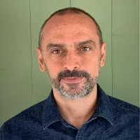
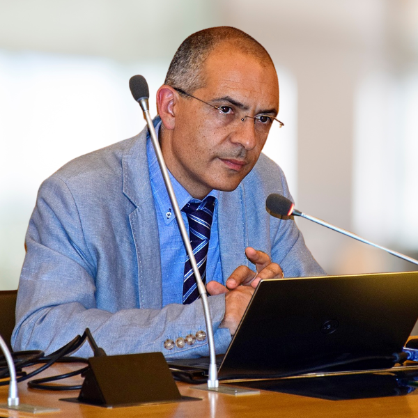
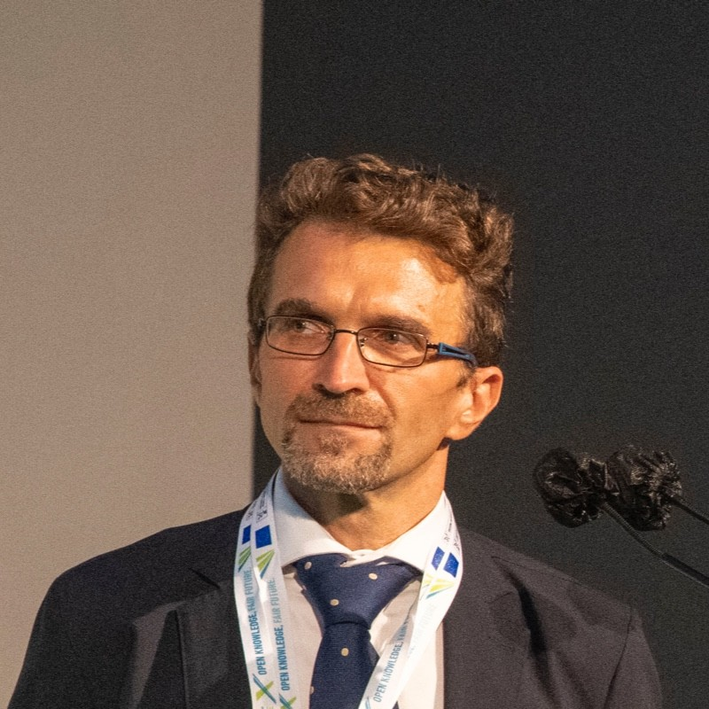

Plenary Sessions
The morning plenary session on 19 June 2026 will revolve around a round table involving representatives from academia, scientific societies, and industry.
Moderator: Alessio Jacona
Alessio Jacona is a journalist, host and moderator specializing in technology and innovation. He curates the Artificial Intelligence Observatory on Ansa.it and contributes to the Rai1 programme “Codice, la vita è digitale”. He began twenty-five years ago writing about hardware and software news; today he tells stories about people, how we all use new technologies, the opportunities and risks they bring, and how their adoption changes the very meaning of what we do and who we are. He currently writes about this epochal transformation for Italian Tech (GEDI Group), ANSA.it and Civiltà dei Dati; in the past he wrote for Nova24 (IlSole24Ore), L'Espresso, Wired Italia and Corriere Motori.

Cosma Belli
Southern & Western Europe Director | Country Manager, Italy | Quantum Computing for HPC & AI | IQM Quantum Computers
Cosma Belli is Southern & Western Europe Director and Country Manager for Italy at IQM Quantum Computers. He has more than 20 years of IT experience in technical engineering and business development roles for multinationals, software companies and system integrators, with a focus on adopting new technologies and quantum computing for HPC and AI.
Andrea Orlandini
President of AIxIA
Andrea Orlandini is a Senior Researcher at the Institute of Cognitive Sciences and Technologies of the National Research Council of Italy and President of AIxIA. His research spans automated planning, cognitive robotics and human-machine interaction, with attention to dialogue among research, industry and civil society.

Sebastiano Battiato
CVPL Delegate for IAPR
Sebastiano Battiato is Full Professor of Computer Science at the University of Catania. His work focuses on computer vision, multimedia forensics and imaging technologies applied to industrial and consumer contexts; he teaches Computer Vision and Digital Forensics.
Domenico Convertino
Senior Vice President at HCLTech
Domenico Convertino is Senior Vice President, Communications Technology Group, at HCLTech. He has long-standing experience in telecommunications, OSS/BSS, IT service management and network automation, developed through product management and digital transformation roles.

Alessandro Zavatta
President and COO of QTI Srl | Head of CNR-INO Trieste Unit
Alessandro Zavatta is a Senior Research Scientist at CNR's National Institute of Optics and an Adjunct Professor at the University of Florence. He leads the CNR-INO Trieste Unit and coordinates CNR's Quantum Communication and Information (QCI) laboratory in Florence and Trieste; his work focuses on quantum technologies and secure quantum communications. He co-founded QTI as a CNR spin-off, serves as President and COO, and has co-authored more than 100 peer-reviewed scientific publications.
Maurizio Stumbo
Head of the Infrastructure, Data Center and Cyber Security Division, Sogei
Maurizio Stumbo is an ICT manager with experience in digital transformation for the public administration. He joined Sogei in 2022 and has led areas related to digital services, infrastructure and data centers; previously he was Director of Information Systems at LAZIOcrea and Vice President of Assinter with responsibility for digital health services.
Workshops Summary
The plenary session will also include a workshops summary coordinated by Carlo Sansone, Director of the CINI-AIIS National Laboratory.